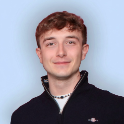

Hi, I'm Stefano
I'm an aerospace engineer from Piedmont, Italy. Space has been my thing since school, when I reached the national finals of the Italian Astronomy Olympiad.
Since then I've worked across research, industry and a start-up I co-founded: from fault-tolerant control at NASA JPL, to ESA proposals at Revolv Space, to building a product used by more than 100,000 people. Outside engineering, I volunteer as treasurer of my town's youth association and I'm a certified scuba diver.

Life outside the lab
Volunteering
I manage the association's finances and help organise cultural, educational and social activities.
Scuba diving
Certified to 20 m.
At a glance
-
2025 – now
Research Collaborator, NASA JPL
Fault-tolerant MPC for small spacecraft, tested on the GSAT air-bearing sled.
-
2025 – 2026
Business Developer Engineer, Revolv Space
Technical proposals for ESA and national space-agency tenders.
-
2024 – now
M.Sc. Aerospace Engineering, Politecnico di Torino
Space systems, flight dynamics and GNC.
-
2022 – 2025
Co-founder & Product Lead, Eventvm
Led a team of 10; the platform grew to 100,000+ users.
-
2023
Intern & B.Sc. thesis, Avio Aero
Simulation of oil aeration in aero-engine gear pumps.
-
2020 – 2023
B.Sc. Aerospace Engineering, Politecnico di Torino
-
2016
National finalist, Italian Astronomy Olympiad
Where the interest in space started.